Your browser does not support HTML5 video.
☁️ Notes from the iPhone of Madeline Greenberg ☁️
Another hour sounds really longgggf-2017-07-27T17:28:36Z.txt
At the time my mother knew, more than I did, that she was not going…-2017-09-12T02:54:28Z.txt
Text stacy about waxing and eyebrows-2017-12-25T03:05:19Z.txt
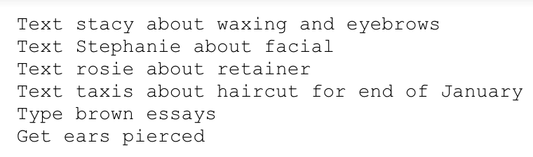
120 W 28th St, New York, NY, USA-2018-06-04T19:05:42Z.txt
Clean room-2018-08-31T21:37:50Z.txt
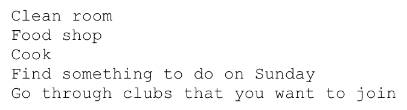
Took a nice moment to think about mom and temple and what it used…-2018-09-09T23:59:32Z.txt
Adventure log: Prague-2018-10-20T23:18:02Z.txt
Ask dad if we have a list of the people that came to moms funeral…-2018-10-21T16:14:19Z.txt
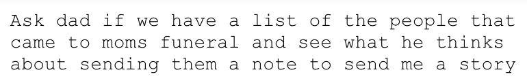
Adventure log: Amsterdam-2018-10-24T16:36:06Z.txt
Grapefruit juice-2018-11-22T03:46:14Z.txt
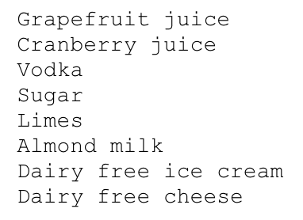
ADDRESS-2019-01-20T14:58:33Z.txt
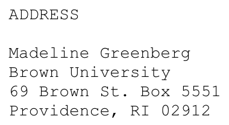
How do you not break people when they find out?-2019-02-12T22:48:28Z.txt
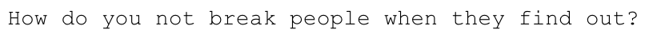
Almond milk-2019-03-28T16:05:09Z.txt
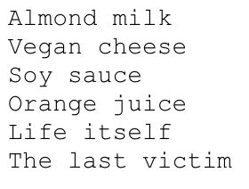
Most buddhist book of the Hebrew bible-2019-04-24T19:38:55Z.txt
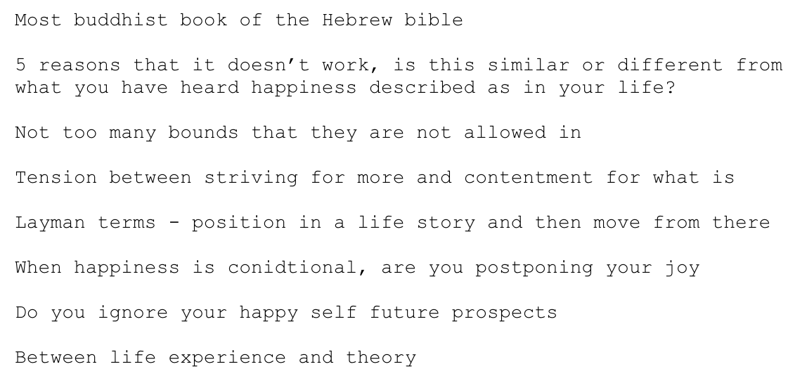
Even more important: never underestimate a volcano -- for humans cannot…-2019-05-04T01:23:42Z.txt
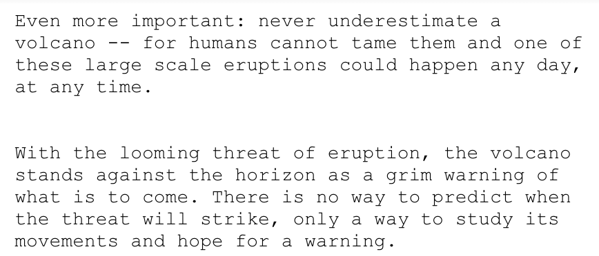
Vulnerability-2019-05-05T22:43:29Z.txt
77, hold-2019-05-31T02:27:44Z.txt
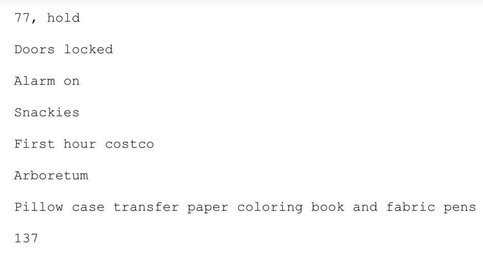
Primer tinted eyes concealer blush bronzer-2019-08-09T19:42:59Z.txt
-----Original Message------2019-11-15T16:03:33Z.txt
Goal setting-2019-11-17T19:20:07Z.txt
Notes - 11|17-2019-11-17T23:15:39Z.txt
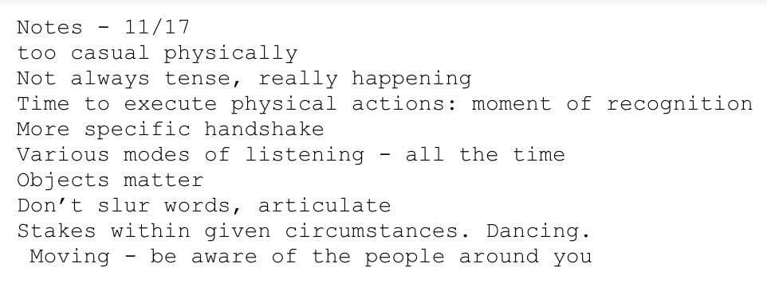
Sadness is a white bird-2020-01-17T19:13:01Z.txt
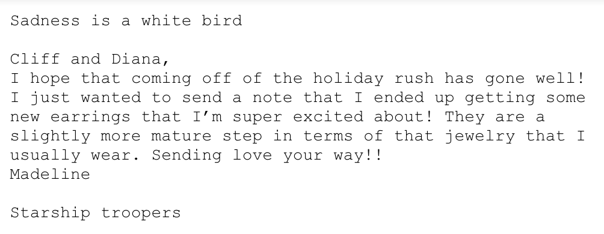
About time1-2020-01-27T16:32:07Z.txt
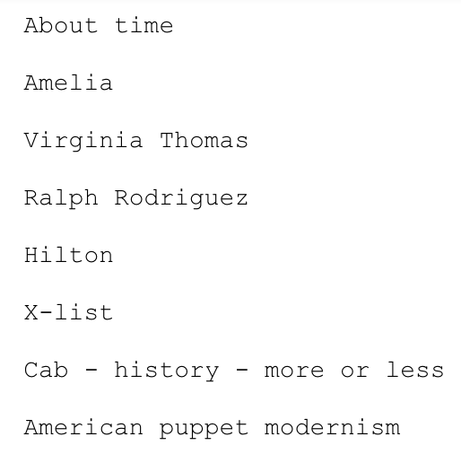
![At the time my mother knew, more than I did, that she was not going to be able to share many more moments with me as she passed away from breast cancer when I was 13 years old. It was the first time, standing with other jewish women with bowed and covered heads, that we looked at each other and cried. Held each other and knew that there was not much more time that we could have to share. That the notes for health that were going into the wall were not going to work. That God no matter how powerful was not going to be able to save her or me from what was going to happen next. It was that moment that I felt that I could finally see what was coming. The year of falling, sinking into the sickness, and then eventually never waking up. In that moment at the wall together it was ok, it was gods plan, it was a holy sentence.](./assets/2017-09-12.png)
![Took a nice moment to think about mom and temple and what it used to be like to celebrate Rosh Hashanah. I’m sad but happy. Love you and thinking about you. I remember the days of Harry Potter behind my seder, and mom wearing pearls and smelling vaguely like hairspray and her perfume. And I remember her outfits and the shoes that she would match perfectly. The fact that we would usually sit with grandma Roberta and my Jacob. That she would always have tissues in her purse and we would sometimes sneak a mint when we were starving as we headed into hour three of services. That you would sleep and only sometimes wake up for the sermon. Love you.](./assets/2018-09-09.png)
![Adventure madeline is on the loose. She is not taking no for an answer as she finds friends in cool places and people that sell weed. It is a strange world. One with crazy drunk people and David Cross just passes you on the street.
Madeline was on a mission. Be happy again. It was a difficult one. One with many memories lost and new Ones found. She has a sidekit. Rosario is my best friend and pet rabbit. But she doesn’t poop as much. She is also slow to respond. Annoying.
Anyway adventure madeline was in Prague talking to a loser about philosophy she turned around and went out to look with the popular kids.
There wasn’t any pot to be found. Until they asked a nice girl at a new bar and she showed them the way.
Then they got High
And all was well. The end.](./assets/2018-10-20.png)
![Adventure log: Amsterdam
It was a lovely day
That started at ney nearly 7:16 ndjdjbsmkfnnfjdjxnndjdjjdbsbska
I’m sorry I am high lol as ballz
There once was a young girl named madeline
Who loves pararegiamorjiano cheese and
Going to a chorus line and mom holding up the tank top and telling me I’d grow into the smallest size
Heeliyinf back and forth through her office hallway while she talked on the phone
Looking at her globe
Her typing with Nails and how fast of a typist she was
I remember she really was special Period
It’s the hardest part that she would have been the best grandma because grandma Berta and my kids won’t
Why is that
Cathy as grandma?
How about I remember when seriously being in bathrooms together in Disney
The smell when I go back reminds me of her
Wow ok
I guess so does being there her Minnie Mouse jacket
That I donated. No it’s been five years. But I’m not ok for ten.
What else? I remember Eddie and Seth wrestling at my pirate party
In the playroom and I thought Seth was going to die
That was before Eddie became reliably an Eddie
I am very tired and I want to go to sleep. I think if i go to sleep right now then I would never get to take off my makeup
Wait mom memories
Mom picking me up at bak and being in her full work outfit in the waiting area and her smiling from her phone when I got there
I was her favorite person to see, everyone else was not as special. I don’t have that with anyone else in that way anymore](./assets/2018-10-24.png)
![Primer tinted eyes concealer blush bronzer
Primer with hands
Squishy for moisturizer pea size
Exfoliate three times a week
Base eyes - one color all over, shape crease one color up
Edge of eye again darker
Edge of eye bottom darkest
Sparkle from inner eye to middle color
Crease in again to blur
Sweep away bottom with setting powder
Brown on underneath top eye line
Edge of eye
Inner eye corner
Concealer eyes dots, down and out
Spots
Bronzer cheekbone top of face, nose hat, bottom of face
Start where most intense
Blush two fingers away top of apples of cheeks](./assets/2019-08-09.png)
![-----Original Message-----
From: Marsha Miller MD
Sent: 11/15/2019 10:57 AM
To: Madeline Greenberg
Subject: RE: reached out to Jayden
Hi Madeline---
Good questions---would take it about the same time everyday---the levels are more consistent.
Would avoid excessive alcohol while on this medicine--one glass of wine or one beer once or twice a week should be fine.
Was thinking about medications Madeline---the Citalopram is a good choice though it has some interactions with some antibiotics ----was thinking Prozac--Fluoxetine might be good choice as it doesn't have those issues and you won't feel bad if you miss a dose once in awhile.
If agreeable to you--would like to prescribe Fluoxetine 20mg--have you take 1/2 tablet (10 mg) in the morning starting tomorrow for the next 5 days--if you are feeling well--then you can go up to the whole tablet after that.
The side effects some can notice are mild headache or nausea. Those usually will dissapate as your body get](./assets/2019-11-15.png)
![Goal setting
Expectation, be respectful v goal measurable, check off
Personal
Perform my show in December
Run the 10K in disney
Apply to summer internships
Positional
Grow by 15 COB in spring
Go over the different days of recruitment and what events exist throughout the year
Pick members for my recruitment committee
E-board goals
Positive language around recruitment
Clarify use as a resource - first chapter what each position is, why you ran, positional goals
Attend every meeting
Folder, doc, committee, what you expect from each person
Write what your committee does - task and expectations
Ask for help from members on committee
One on one, tell Sarah, call into CRSB, need to have people that work
Go through calendar events](./assets/2019-11-17.png)